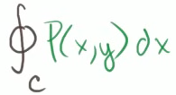

We've already explored a two-dimensional version of the divergence theorem..
If I have some region-- so this is my region right over here..
And let's call the boundary of my region, let's call that C..
And if I have some vector field in this region, so let me draw a vector field like this..
If I draw a vector field just like that, our two-dimensional divergence theorem, which we really derived from Green's theorem, told us that the flux across our boundary of this region-- so let me write that out..
The flux across the boundary, so the flux is essentially going to be the vector field..
It's going to be our vector field F dotted with the normal outward-facing vector..
So the normal vector at any point is this outward-facing vector, So our vector field, dotted with the normal-facing vector at our boundary times our little chunk of the boundary..
If we were to sum them all up over the entire boundary-- let me write that a little bit neater-- that's the same thing as summing up over the entire region..
So let's sum up over the entire region..
So summing up over this entire region, each little chunk of area, dA-- we could call that dx dy if we wanted to if we're dealing in the xy domain right over here, but each little chunk of area times the divergence of F, which is really saying, how much is that vector field pulling apart? So it's times the divergence of F..
And hopefully, it made intuitive sense..
The way that I drew this vector field right over here, you see everything's kind of coming out..
You could almost call this a source right here, where the vector field seems like it's popping out of there..
This has positive divergence right over here..
And so because of this, you actually see that the vector field at the boundary is actually going in the direction of the normal vector, pretty close to the direction of the normal vector, so it makes sense..
You have positive divergence, and this is going to be a positive value..
The vector field is going, for the most part, in the direction of the normal vector..
So the larger this is, the larger that is..
So hopefully, some intuitive sense..
If you had another vector field-- so let me draw another region-- that looked like this, so I could draw a couple situations..
So one where there's very limited divergence, maybe it's just a constant..
The vector field doesn't really change as you go in any given direction..
Over here you'll get positive fluxes..
I don't know what the plural of flux is..
You'll get positive fluxes, because the vector field seems to be going in roughly the same direction as our normal vector..
But here, you'll get a negative flux..
So stuff is coming in here..
If you imagine your vector field is essentially some type of mass density times volume, and we've thought about that before, this is showing how much stuff is coming in, and then stuff is coming out..
So your net flux will be close to zero..
Stuff is coming in, and stuff is coming out..
Here, you're just saying, hey, stuff is constantly coming out of this surface..
So hopefully, this gives you a sense that here you have very low divergence, and you would have a low flux, total aggregate flux, going through your boundary..
Here you have a high divergence, and you would have a high aggregate flux..
I could draw another situation..
And let's say that we have negative divergence, or we could even call it convergence..
Convergence isn't an actual technical term, but you could imagine if the vector field is converging within R, well, the divergence is going to be negative in this situation..
It's actually converging, which is the opposite of diverging..
So the divergence is negative in this situation..
And also the flux across the boundary is going to be negative..
Because as we see here, the way I drew it, across most of this boundary, the vector field is going in the opposite direction..
It's going in the opposite direction as our normal vector at any point..
So hopefully, this gives you a sense of why there's this connection between the divergence over the region and the flux across the boundary..
Well, now we're just going to extend this to three dimensions, and it's the exact same reasoning..
If we have a-- and I'll define it a little bit more precisely in future videos-- a simple, solid region..
And I'm going to try to draw it in three dimensions..
So let's say it looks something like that..
And one way to think about it is this is going to be a region that doesn't bend back on itself..
And if you have a region that bends back on itself-- well, we'll think about it in multiple ways..
But out of all the volumes of three dimensions that you can imagine, these are the ones that don't bend back on themselves..
And there are some that you might not be able to imagine that would also not make the case..
But even if you had ones that bent back on themselves, you could separate them out into other ones that don't..
So here is just a simple solid region over here..
I'll make it look three dimensional..
So maybe if it was transparent, you would see it like that..
And then you see the front of it like that..
So it's this kind of elliptical, circular, blob-looking thing..
So that could be the back of it..
And then if you go to the front, it could look something like that..
So this is our simple solid region..
I'll call it-- well, I'll call it R still..
But we're dealing with a three dimensional..
We are now dealing with a three-dimensional region..
And now the boundary of this is no longer a line..
We're now in three dimensions..
The boundary is a surface..
And now let's throw on a vector field here..
Now, this is a vector field in three dimensions..
And now let's imagine that we actually have positive divergence of our vector field within this region right over here..
So we have positive divergence..
So you can imagine that it's kind of-- the vector field within the region, it's a source of the vector field, or the vector field is diverging out..
That's just the case I drew right over here..
And the other thing we want to say about vector field S, it's oriented in a way that its normal vector is outward facing, so outward normal vector..
So the normal, it's oriented so that the surface-- the normal vector is like that..
The other option is that you have an inward-facing normal vector..
But we're assuming it's an outward-facing N..
Well, then we just extrapolate this to three dimensions..
We essentially say the flux across the surface..
So the flux across the surface, you would take your vector field, dot it with the normal vector at the surface, and then multiply that times a little chunk of surface, so multiply that times a little chunk of surface, and then sum it up along the whole surface, so sum it up..
So it's going to be a surface integral..
So this is flux across the surface..
It's going to be equal to-- if we were to sum up the divergence, if we were to sum up across the whole volume, so now if we're summing up things on every little chunk of volume over here in three dimensions, we're going to have to take integrals along each dimension..
So it's going to be a triple integral over the region of the divergence of F..
So we're going to say, how much is F? What is the divergence at F at each point? And then multiply it times the volume of that little chunk to sense of how much is it totally diverging in that volume..
That should be equal to the flux..
It's completely analogous to what's here..
Here we had a flux across the line..
We had essentially a two-dimensional-- or I guess we could say it's a one-dimensional boundary, so flux across the curve..
And here we have the flux across a surface..
Here we were summing the divergence in the region..
Here we're summing it in the volume..
But it's the exact same logic..
If you had a vector field like this that was fairly constant going through the surface, on one side you would have a negative flux..
On the other side, you would have a positive flux, and they would roughly cancel out..
And that makes sense, because there would be no diverging going on..
If you had a converging vector field, where it's coming in, the flux would be negative, because it's going in the opposite direction of the normal vector..
And so the divergence would be negative as well, because essentially the vector field would be converging..
So hopefully this gives you an intuition of what the divergence theorem is actually saying something very, very, very, very-- almost common sense or intuitive..
And now in the next few videos, we can do some worked examples, just so you feel comfortable computing or manipulating these integrals..
And then we'll do a couple of proof videos, where we actually prove the divergence theorem..
Green's Theorem Proof Part 1
Let's say we have a path in the xy plane.
That's my y-axis, that is my x-axis, in my path
will look like this.
Let's say it looks like that; trying to draw a bit of an
arbitrary path, and let's say we go in a counter clockwise
direction like that along our path.
And we could call this path-- so we're going in a counter
clockwise direction --we could call that path c.
And let's say we also have a vector field.
And our vector field is going to be a little unusual;
I'll call it p.
p of xy.
It only has an i component, or all of its vectors are only
multiples of the i-unit vector.
So it's capital P of xy times the unit vector i.
There is no j component, so if you have to visualize this
vector field, all of the vectors, they're all multiples
of the i-unit vector.
Or they could be negative multiples, so they could
also go in that direction.
But they don't go diagonal or they don't go up.
They all go left to right or right to left.
That's what this vector field would look like.
Now what I'm interested in doing is figuring out the line
integral over a closed loop-- the closed loop c, or the
closed path c --of p dot dr, which is just our standard
kind of way of solving for a line integral.
And we've seen what dr is in the past.
dr is equal to dx times i plus dy times the j-unit vector.
And you might say, isn't it dx, dt times dt?
Let me write that can't dr be written as dx, dt times
dti plus dy, dt times dtj?
And it could, but if you imagine these differentials
could cancel out, and you're just left with the dx and
a dy, and we've seen that multiple times.
And I'm going to leave it in this form because hopefully, if
we're careful, we won't have to deal with the third
parameter, t. So let's just look at it in this form right here with
just the dx's and the dy's.

So let's just look at it in this form right here with
just the dx's and the dy's.
So this integral can be rewritten as the line integral,
the curve c-- actually let me do it over down here.
The line integral over the path of the curve c of p dot dr. So
we take the product of each of the coefficients, let's say the
coefficient of the i component, so we get p-- I'll do that in
green, actually do that purple color --so we get p of xy times
dx plus-- well there's no 0 times j times dy; 0 times dy id
just going to be 0 --so this our line integral simplified
to this right here.
This is equal to this original integral up here, so we're
literally just taking the line integral around this path.

Now I said that we play our cards right, we're not going to
have to deal with the third variable, t; that we might be
able just solve this integral only in terms of x.
And so let's see if we can do that.
So let's look at our minimum and maximum x points.
That looks like our minimum x point.
Let's call that a.
Let's call that our maximum x point; let's call that b.
What we could do is we can break up this curve into
two functions of x. y is functions of x.
So this bottom one right here we could call as y1 of x.
This is just a standard curve; you know when we were just
dealing with standard calculus, this is just you can
imagine this is f of x and it's a function of x.
And this is y2 of x.
Just like that.
So you can imagine two paths; one path defined by y1 of x--
let me do that in a different color; magenta --one path
defined by y1 of x as we go from x is equal to a to x is
equal to b, and then another path defined by y2 of x as we
go from x is equal to b to x is equal to a.
That is our curve.

So what we could do is, we could rewrite this integral--
which is the same thing as that integral --as this is equal to
the integral-- we'll first do this first path --of x going
from a to b of p of x.
And I could to say p of x and y, but we know along this
path y is a function of x.
So we say x and y1 of x.
Wherever we see a y we substitute it with
a y1 of x, dx.
So that covers that first path; I'll do it in the same color.
We could imagine this is c1.
This is kind of the first half of our curve-- well it's not
exactly the half --but that takes us right from that
point to that point.
And then we want to complete the circle.
Maybe I'll do that, and I'll do that in yellow.
That's going to be equal to-- sorry we're going to have to
add these two --plus the integral from x is equal to b
to x is equal to a of-- do it in that same color --of p of x.
And now y is going to be y2 of x.
Wherever you see a y, you can substitute with y2
of x along this curve.
y2 of x, dx.
This is already getting interesting and you
might already see where I'm going with this.
So this is the curve c2.
too I think you appreciate if you take the union of c1 and
c2, we've got our whole curve.
Antiderivative of Hairier Expression
So, our goal in this video is to take the antiderivative of this fairly crazy looking expression. Or another way of saying it is to find the indefinite integral of this crazy looking expression.
And the key realization right over here is that you, this expression is made up of a bunch of terms. And the indefinite integral of the entire expression is going to be equal to the indefinite integral of each of the terms.
So this is going to be equal to, we could look at this term right over here and just take the indefinite, take the indefinite integral of that. x to the 3rd dx.
And then from that we can subtract the indefinite integral of this thing. So we can say this is, and then minus. The indefinite integral of 5 times the square root of x d x.
And then we can look at this one right over here. So then we can say plus the indefinite integral of 18 square root of x. Square roots of x over x to the third, dx and then finally, and I'm running out of colors here.
Finally, I need more colors in my thing. We can take the anti derivative of this. So plus the anti derivative of x to the negative 40th power dx.
So, I've just rewritten this and color coded things. So, let's take the anti derivative of each of these and you'll see that'll we'll be able to do it. Using our whatever we wanna call the inverse of the power rule or the anti power rule. Whatever you might wanna call it.
So lets look at the first one. So we have, we have, what I'm gonna do is I'm just gonna find the antiderivative without the constant and just add the constant at the end for the sake of this. So we just make sure we get the most general anti derivative.
So here the exponent is a 3. So we can increase it by 1. So it's going to be x to the 4th. It's gonna be that same purple color. Or that pink color. It's going to be x to the 4th. And we're gonna divide x to the 4th. So it's x to the 4th over 4 is the antiderivative of x to the 3rd, and you just had this scaling quantity. The 7 out front. So we can still just have 7 out front. So we get 7x to the 4th over 4. Fair enough.
From that, we're going to subtract the antiderivative of this. Now, at first, this might not be obvious that this, you could use our inverse power rule or anti-power rule here. But then you just need to realize that 5 times the principal root of x is the same thing as. So, this is the same thing as 5 x X to the 1 half power. And, so, once again, the exponent here is one half, we can increment it by 1. This is going to be X to the 3 halves. And then, divide by the incremented exponent. So, divide by. Three halves and of course we had this five out front so we still want to have the five out front.